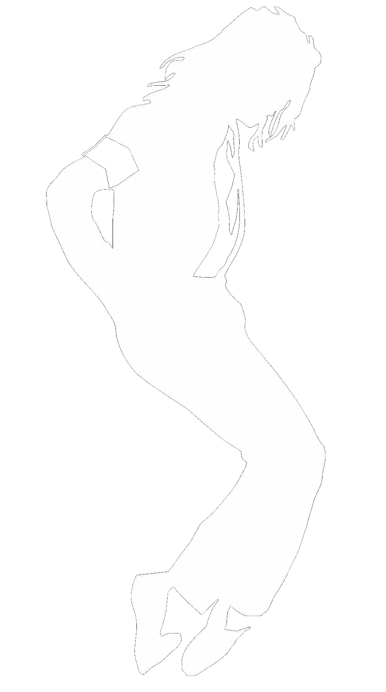

Música
De Off the Wall a Thriller, de Bad a Dangerous, su obra cruzó soul, funk, pop, rock, R&B, new jack swing y espectáculo global.

Archivo MoonwalkHomenaje cultural · Archivo legal · Memoria pop
Una web personal para ordenar, estudiar y sentir la obra de Michael Jackson desde fuentes públicas, legales y verificables: música, cortometrajes, conciertos, documentales, libros, documentos, rarezas y legado cultural.
Por qué importa
De Off the Wall a Thriller, de Bad a Dangerous, su obra cruzó soul, funk, pop, rock, R&B, new jack swing y espectáculo global.
Sus videoclips funcionaron como cortometrajes: narrativa, coreografía, cine, moda, efectos y televisión en una misma liturgia de escenario.
Su legado sigue vivo en artistas, fans, archivos, reediciones, homenajes, biopics, museos, teatro musical y cultura digital.
Nada pirata · todo verificable
Esta web no aloja descargas ilegales. Enlaza fuentes oficiales, bases de datos públicas, plataformas legales y recursos documentales.
Videoclips y short films oficiales para ver o embeber cuando YouTube lo permita.
Abrir fuente legal →Spotify, Apple Music, tiendas digitales y ediciones físicas autorizadas.
Ver música oficial →Discogs, MusicBrainz, Grammy, RIAA, Billboard, prensa y archivos públicos.
Ver fuentes verificadas →Mapa de investigación
Línea de tiempo documentada: infancia, The Jackson 5, carrera solista, últimos años y legado.
Álbumes, sencillos, reediciones, demos oficiales, créditos y certificaciones.
Thriller, Billie Jean, Beat It, Bad, Smooth Criminal, Black or White, Scream, Ghosts y más.
Motown 25, Bad World Tour, Dangerous Tour, HIStory Tour, Super Bowl y This Is It.
Material oficial, biográfico, crítico, musical, periodístico y controversial con advertencias claras.
Rarezas, patentes, videojuegos, objetos subastados, símbolos visuales e innovaciones escénicas.
Ética del archivo
Este proyecto es un homenaje cultural y educativo. No distribuye MP3, películas, documentales, conciertos ni fotografías protegidas sin licencia. Para compartir la obra de Michael Jackson se usarán enlaces oficiales, embeds permitidos, referencias bibliográficas, análisis propio e imágenes con licencia clara.